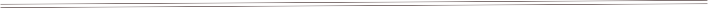
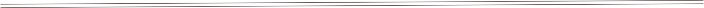

WINE LIST

DRAFT WINE
WHITE | Tasting Notes | Glass | Carafe | Carafe |
Hahn Chardonnay, Monterey County, CA 2016 | Flavors of green banana, baked apples and toffee. | $9 | $18 | $30 |
Estancia Pinot Grigio, Caifornia 2016 | Lively, zesty, and refreshing flavors of green apple, Asian pear, lemon-citrus with a soft mid-palate | $9 | $18 | $30 |
Nobilo Sauvignon Blanc, Marlborough, NZ 2015 | Vibrant and refreshing with tropical fruit flavors like pineapple, cantaloupe, citrus, and herbal notes. | $9 | $18 | $30 |
RED | ||||
Hahn Cabernet, Monerery County, CA 2015 | Inviting blackberry and cassis aromatics complement notes of vanilla, toasted oak and a touch of leather. | $10 | $19 | $32 |
Angeline Pinot Noir, Russian River Valley, CA 2016 | The palate is round and juicy with lively acidity, and a touch of sweet, toasty oak on the finish. | $10 | $19 | $32 |
Raspberry jam and vanilla oak characters on the nose, it has juicy mixed berry flavors, and full-but-soft and approachable tannin
WHITES
$10 $19 $32
Glass | Bottle | |
Ferrari-Carano Chardonnay, Sonoma Valley, CA 2015 Meyer lemon, pear and butter cream with hints of vanilla | $12 | $42 |
Mer Soleil Chardonnay, Santa Lucia Highlands, CA 2015 Bright aromas and the taste of white peach | $11 | $38 |
Truchard Chardonnay, Napa, CA 2014 Wildflower honey, green apple, and fresh pear | - | $48 |
75 Sauvnigon Blanc, St Helena, CA 2016 Asian pear, red apple, and early season peach flavors | $9 | $30 |
Cloudy Bay Sauvignon Blanc, Marlborough, New Zealand 2015 Mix of kaffir lime, lemon zest and nectarine | - | $48 |
Duckhorn Vineyards Sauvignon Blanc, Napa Valley, CA 2016 Ripe citrus and tropical flavors | - | $48 |
Murrieta’s Well White Blend “The Whip”, Livermore, CA 2015 White peach, honey, butterscotch and jasmine | $10 | $36 |
R. Stuart Pinot Gris Big Fire, McMinnville, OR 2015 Orange rind, white pepper, Mandarin | $11 | $39 |
Ruffino IL Ducale Pinot Grigio, Italy 2015 Pineapple, white peach, and tropical fruits | $9 | $27 |
Clean Slate Riesling, Mosel, Germany 2016 Ripe peach flavors, hints of lime and characteristic mineral notes | $8 | $24 |
Montevina White Zinfandel, Amador County, CA 2014 Ripe strawberries, juicy peaches, and watermelon | $7 | $21 |
HI! Moscatto, Conegliano, Italy 2016 Like biting into a candied red delicious apple, fresh and sweet | $8 | $24 |
Mionetta Prosecco, Veneto, Italy - Refreshing and full of fresh, apple, apricot, and nectar flavors | - | $8 |

REDS